This function is the mgcViz equivalent of plot.gam. It is the workhorse of the
mgcViz package, and allows plotting (almost) any type of smooth,
parametric or random effects. It is basically a wrapper around plotting
methods that are specific to individual smooth effect classes (such as
plot.mgcv.smooth.1D and plot.random.effect).
# S3 method for gamViz plot(x, n = 100, n2 = 40, select = NULL, allTerms = FALSE, ...)
| x | an object of class |
|---|---|
| n | number of points used for each 1-d plot. For a nice smooth plot this needs to be several times the estimated degrees of freedom for the smooth. |
| n2 | square root of number of grid points used for plotting 2D functions effects using contours or heatmaps. |
| select | allows plotting a subset of model terms. For instance, if you just want the plot
for the second smooth term, set |
| allTerms | if |
| ... | other parameters, such as |
An object of class c("plotGam", "gg").
library(mgcViz) ######## Basic example # Simulate some data and fit model set.seed(2) dat <- gamSim(1,n=1e3,dist="normal",scale=2)#> Gu & Wahba 4 term additive modelb <- bam(y~s(x0)+s(x1, x2)+s(x3), data=dat) b <- getViz(b) # Default smooth effect plotting print(plot(b), ask = FALSE)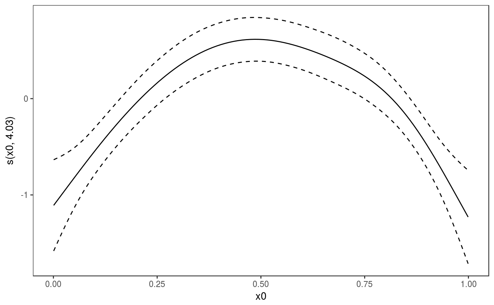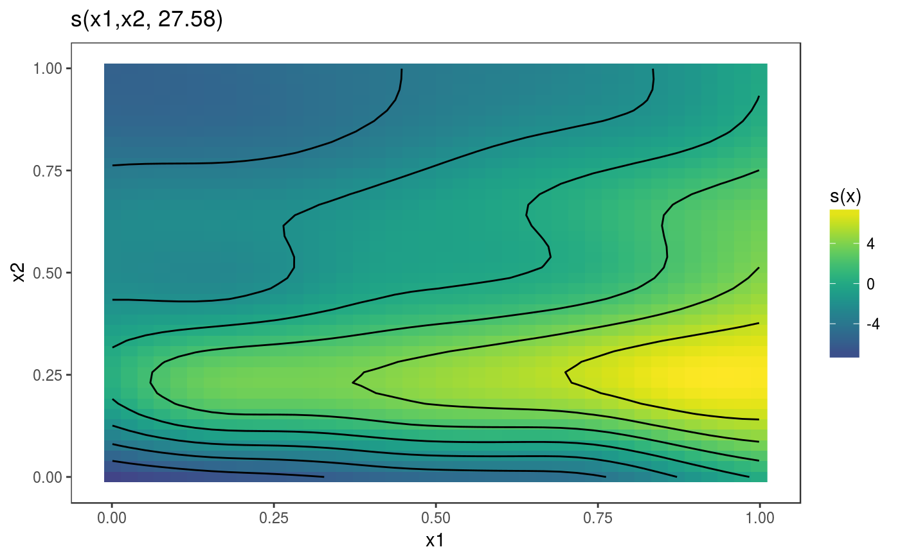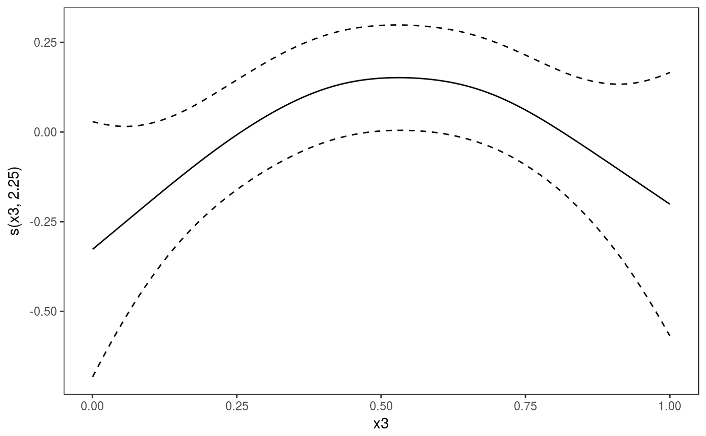# Now on one page and with out title on the second plot print(plot(b) + labs(title = NULL), pages = 1)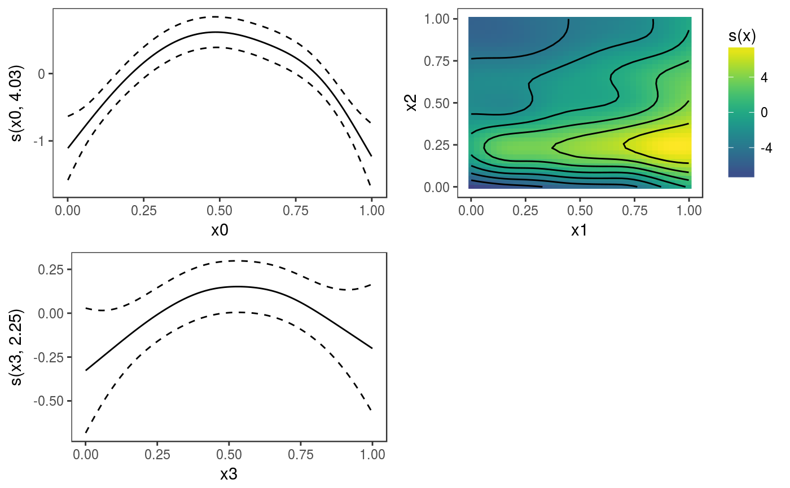# So far we used default layers, added in the printing phase, but # we might want to specify our own layers. Here we is how to do it pl <- plot(b) + l_points() + l_fitLine(linetype = 3) + l_fitContour() + l_ciLine(colour = 2) + theme_get() + labs(title = NULL) print(pl, pages = 1)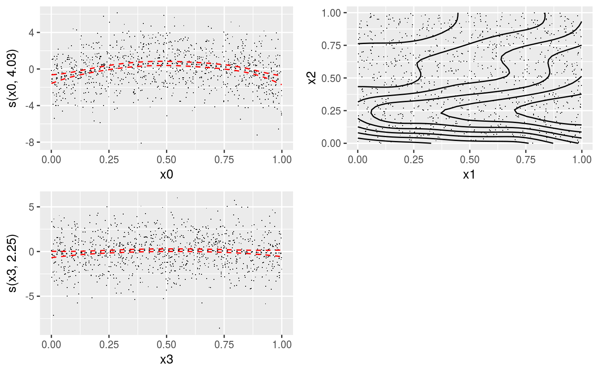# We might want to plot only the first smooth plot(b, select = 1) + l_dens(type = "cond") + l_fitLine() + l_ciLine()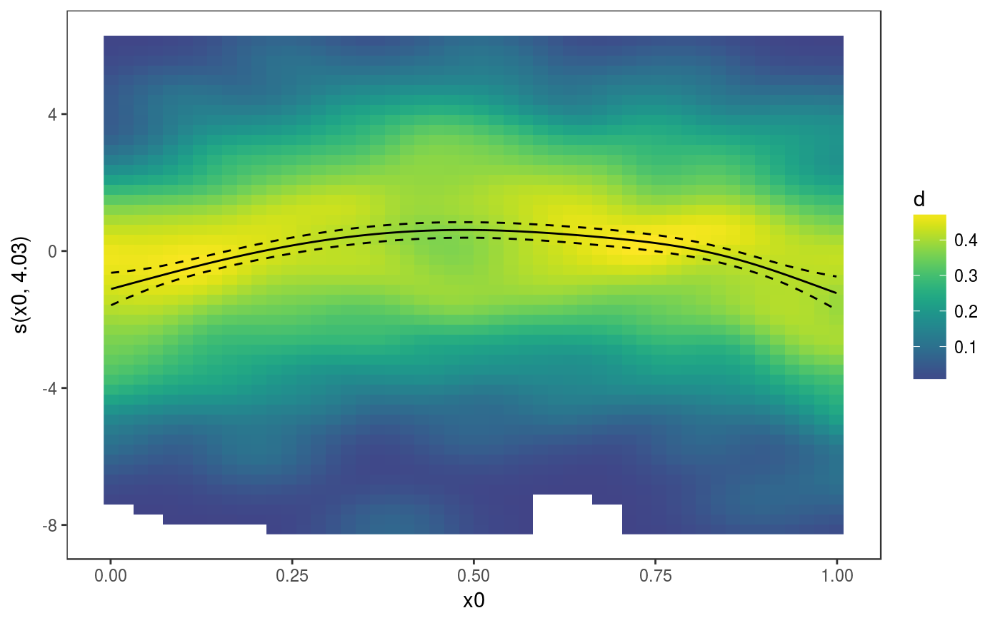######## Example with "by variable" smooth effect # Simulate data and fit model dat <- gamSim(4)#> Factor `by' variable exampleb <- gam(y ~ fac+s(x2,by=fac)+s(x0),data=dat) b <- getViz(b) # print() only needed because we want to plot on a single page print(plot(b), pages = 1)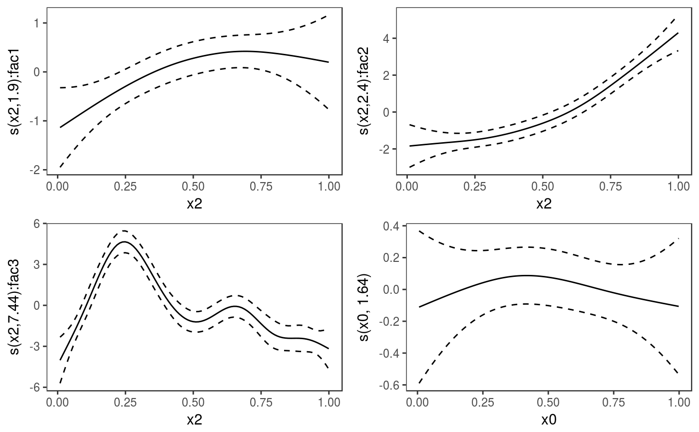print(plot(b, allTerms = TRUE), pages = 1) # Including also parametric effect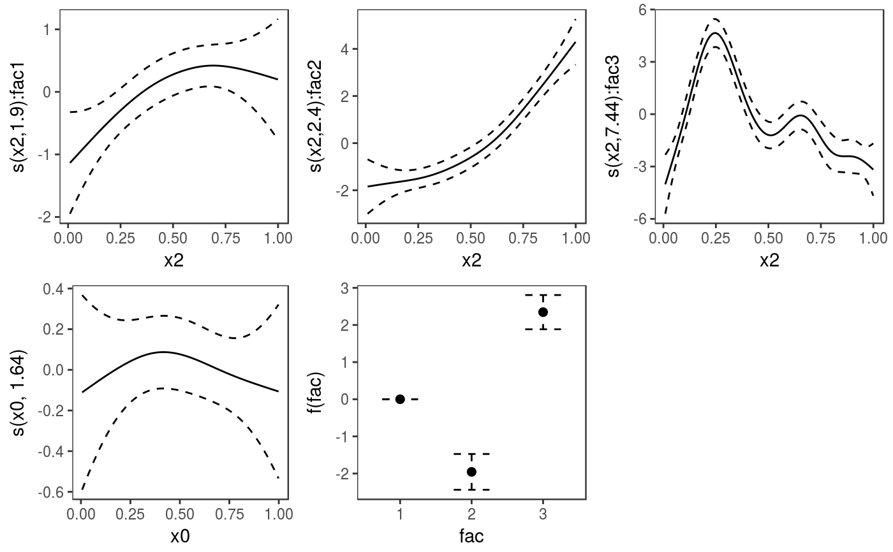######## Example with 3D smooth effect which cannot be plotted # Simulate data and fit model n <- 5e3 x <- rnorm(n); y <- rnorm(n); z <- rnorm(n); z2 <- rnorm(n) ob <- (x-z)^2 + (y-z)^2 + z2^3 + rnorm(n) b1 <- bam(ob ~ s(x, y, z) + s(z2), discrete = TRUE) b1 <- getViz(b1) # Only second effect get plotted plot(b1)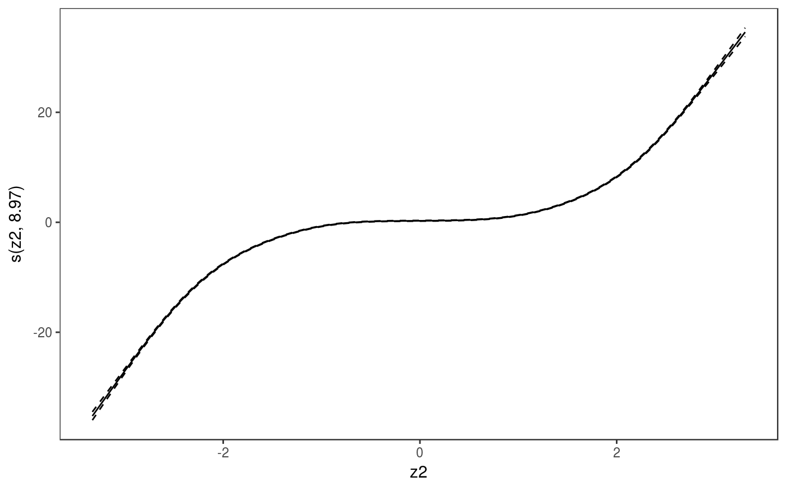# In fact this does not plot anything plot(b1, select = 1)#># For plotting effects with more than 2D, one we need specific method. # See ?plot.mgcv.smooth.MD ######## Examples about plotting parametric effects # 1 Gaussian GAM set.seed(3) dat <- gamSim(1,n=2500,dist="normal",scale=20)#> Gu & Wahba 4 term additive modeldat$fac <- as.factor( sample(c("A1", "A2", "A3"), nrow(dat), replace = TRUE) ) dat$logi <- as.logical( sample(c(TRUE, FALSE), nrow(dat), replace = TRUE) ) bs <- "cr"; k <- 12 b <- bam(y ~ x0 + x1 + I(x1^2) + s(x2,bs=bs,k=k) + fac + x3:fac + I(x1*x2) + logi + s(x3, bs=bs),data=dat, discrete = TRUE) b <- getViz(b) # All effects in one page. Notably 'x3:fac' is missing: we have no methods # for plotting second order effects. print(plot(b, allTerms = TRUE), pages = 1)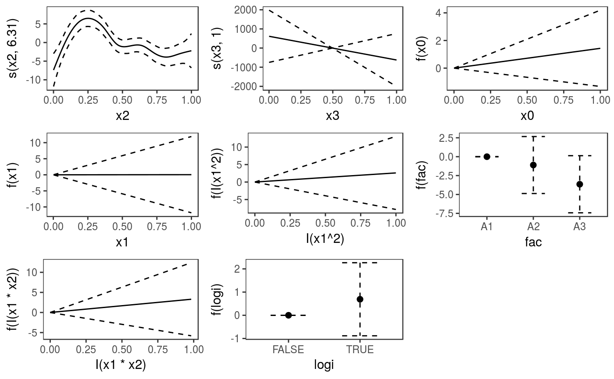# Plotting only parametric effects print(plot(b, select = 3:9), pages = 1)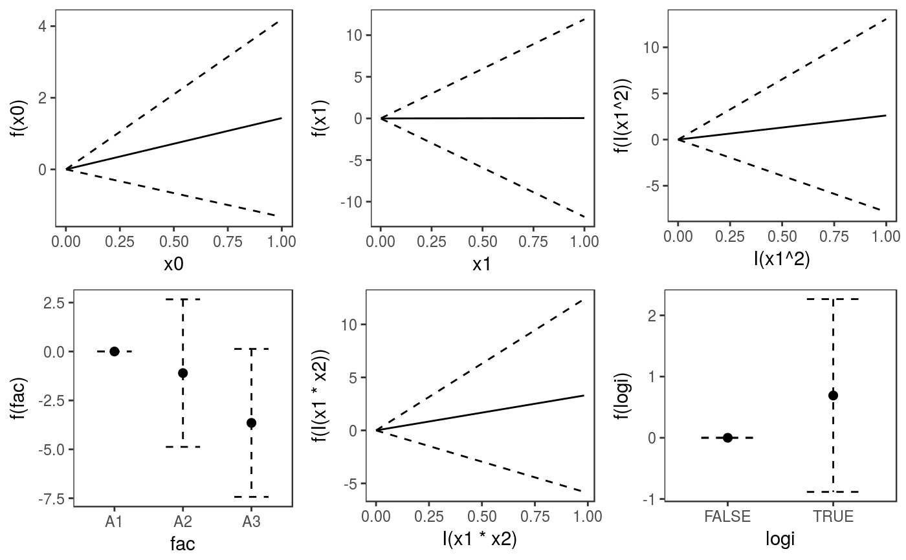# 2 GAMLSS Gaussian model library(mgcv);library(MASS) mcycle$fac <- as.factor( sample(c("z", "k", "a", "f"), nrow(mcycle), replace = TRUE) ) b <- gam(list(accel~times + I(times^2) + s(times,k=10), ~ times + fac + s(times)), data=mcycle,family=gaulss()) b <- getViz(b) # All effects on one page: effect of second linear predictor end with '.1' print(plot(b, allTerms = TRUE), pages = 1)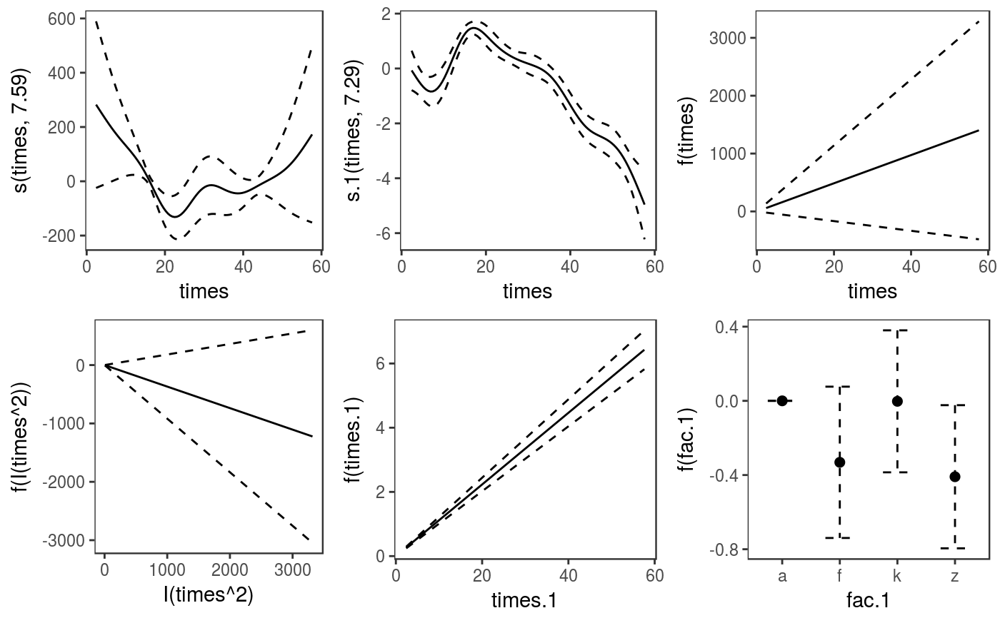